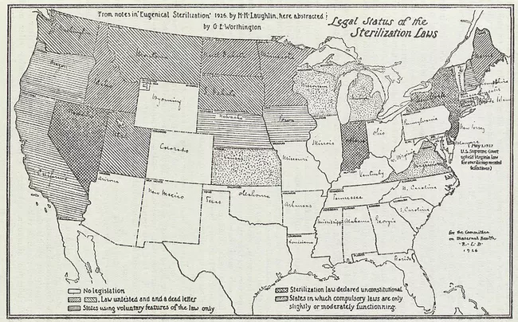
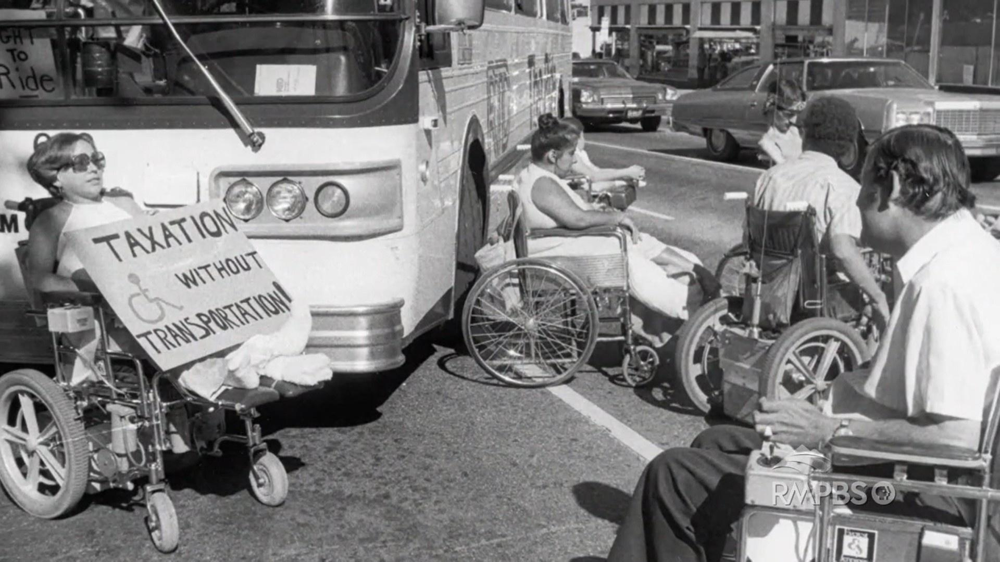
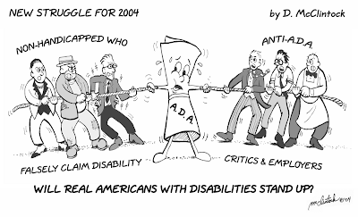
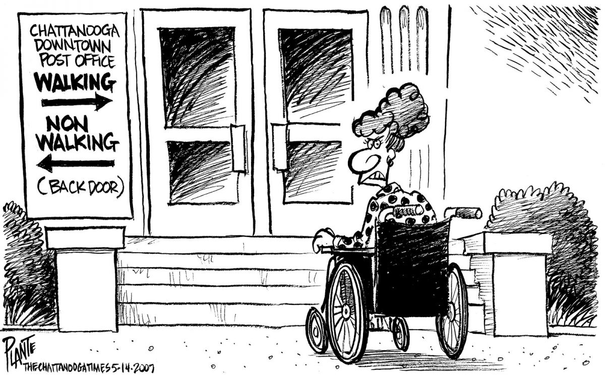

• Chicago Ugly Laws (1881)
• Allowed anyone that looked like they were physically disabled to be fined on the spot
• One of the earliest examples of systemic discrmination against the disabled
• The exact wording of the law read: "...any person who is diseased, maimed, mutilated or in any way deformed so as to be an unsightly or disgusting object" may be fined
• Similar laws were enacted in Omaha, Nebraska, and eventually other parts of the country
• The goal was to remove the disabled off the streets
• The sentiment was close to being if the public could not see them, the government would not have to deal with them
"People in the world can never imagine the length of days to those in asylums. They seemed never ending, and we welcomed any event that might give us something to think about as well as talk of. There is nothing to read, and the only bit of talk that never wears out is conjuring up delicate food that they will get as soon as they get out. Anxiously the hour was watched for when the boat arrived to see if there were any new unfortunates to be added to our ranks. When they came and were ushered into the sitting-room the patients would express sympathy to one another for them and were anxious to show them little marks of attention. Hall 6 was the receiving hall, so that was how we saw all newcomers.
Soon after my advent a girl called Urena Little-Page was brought in. She was, as she had been born, silly, and her tender spot was, as with many sensible women, her age. She claimed eighteen, and would grow very angry if told to the contrary. The nurses were not long in finding this out, and then they teased her.
'Urena,' said Miss Grady, 'the doctors say that you are thirty-three instead of eighteen,' and the other nurses laughed. They kept up this until the simple creature began to yell and cry, saying she wanted to go home and that everybody treated her badly. After they had gotten all the amusement out of her they wanted and she was crying, they began to scold and tell her to keep quiet. She grew more hysterical every moment until they pounced upon her and slapped her face and knocked her head in a lively fashion. This made the poor creature cry the more, and so they choked her. Yes, actually choked her. Then they dragged her out to the closet, and I heard her terrified cries hush into smothered ones. After several hours' absence she returned to the sitting-room, and I plainly saw the marks of their fingers on her throat for the entire day."
- "Ten Days in a Mad House" by Nellie Bly
• This article shows one of the earliest instances of exposing the wrongs of how the mentally disabled were treated in America and an important first step in the American Disability Rights Movement
• At the time, the eugenics movement had just started and the idea that the mentally ill were inferior to others were prominent and even more prevelant than discrimination of physically disabled people at the time
• The article was written for an audience of New Yorkers in order to expose the abuses and failures of the mental health services at the time
• The point of view is from a young woman who just got picked up by a publisher who was looking for a sensationalist story to make money off of
• Due to this, the text may be exaggerated in some areas however other testimonies from other mental asylums throughout the century, like the one in Willbrook, show similar patterns indicating a good amount of reliability from Nellie Bly
• In 1907, the Eugenic Sterilization Law was passed
• The law itself enforced the compulsory sterilization of the physically disabled and those deemed insane
• This was reflective of the growing eugenics movement
• Those who believed in eugenics belived that humans should only reproduce those considered "desirable"
• The disabled, alongside queer people, racial minorities, and those who were not considered white enough were sterlized because of these laws
• This idea would later become popular with the Nazi party during World War II
• The eugenics movement continued to get traction from across the United States and internationally
• Eugenicists started to use IQ measurements to justify sterilization of those considered "feebleminded"
• Anyone considered intellectually lesser or had percieved abnormal behavior could be sterilized
• In 1914, Laughlin proposed the Model Eugenical Sterilization Law which came packaged with all the previous reasons for sterilization and more, including things such as socioeconomic status
• At this point in time, a total of 12 states had passed various sterilization laws
• Most sterilization operations were performed on women in California, who if found to be neurodirvegent or physically disabled would be sterilized to ensure that their children would not be "feebleminded"
• Close to this time, many states prohibited people with mental disabilities such as epilepsy from marrying other people

• The infographic’s purpose is to show which states no longer had legislation enforcing sterilization due to the eugenics movement
• The recognized unconstitutionality of sterilization laws was an early legal victory for the American Disability Rights Movement and took the effort of other civil rights movements to accomplish
• The intended audience is for the general American public and was from a government perspective on the issue
• Despite some states declaring that forced sterilization was illegal, many others still enforced it such as Virginia
• This was exemplified in the Buck v. Bell case
• Bell was a woman deemed "feebleminded" and condemned to a mental institution
• She was then sterilized forcefully due to a Virginian law allowing inmates of mental asylums to be sterilized
• The Supreme Court unfortunately deemed the sterilization to be legal on a technicality
• In 1932, Franklin D Roosevelt is elected president
• He became the first disabled president who was paralyzed from the waist down due to polio
• Two years later in 1934, the National Federation for the Blind is founded
• This is one of the first organizations to help the disabled in America
• The organization helped bring blind people's concerns to state legislatures to be addressed
• Soon after in 1935, the passing of the Social Security Act funds grants and aid to the disabled to assist them in the Great Depression
• This act would continue to help the disabled into the present day by giving monthly payments to the disabled as well as the elderly
• The Social Security Program is one of the first effective services to assist the disabled
• The 1940s would raise the awarness of disabilities due to rises in ruebella and polio
• In 1946, President Harry Truman signed the National Mental Health Act
• The National Mental Health Foundation would be established which would expose abusive conditions at mental facilities and help the mentally ill
• In 1947, they would receive their first grant for mental health research
• In 1949, the National Institute of Mental Health was established alongside four other institutes of health
• The formation of these various foundations would result further vital government assistance for the disabled and particularly the mentally disabled
• At this time, mental health problems were stigmatized just as much if not more than physical disabilities which is why specific assistance to the mentally ill was an important step
• In 1950, disabled veterans, along wth other activists, advocated for a barrier free environment
• This barrier free environment referred to an environment with proper accomodations for the physically disabled to use
• Both outbreaks in diseases that lead to paralysis and the end of World War II led to further awareness of physical disabilities and led to increased activism
• In 1954, Brown v. Board of Education led to the end of racial segregation in schools
• It had also paved the way to integrating those with mental disabilities into schooling rather than keeping them seperate
• This would later be expanded on with laws such as section 504 to further prevent the discrmination of the disabled in schools
• Ed Roberts was paralyzed from the neck down since the age of 14
• Since he needed an iron lung to breathe he attened high school via telephone
• Initiialy, when applying to the University of California Roberts was denied for not fulfilling physical education requirements
• However, he challenged the administration of the university and was eventually accepted in 1962
• Roberts would then go on to become an activist for American disabilities rights
• The next year, in 1963, John F Kennedy signed the Community Mental Health Act to improve mental health services
• The act ultimately failed because of a lack of funding and only around half of the proposed mental hospitals were actually built
• In 1970, Judy Heumann was denied a teaching license because her wheelchair was considered a fire hazard
• So, she sued the NYC board of education, and got a license when the case was settled outside of the court
• 1972, conditions in Willowbrook State School outraged the nation, due to not actually treating or helping the mentally ill, instead only worsening their conditions further
• This was exposed in a film called "Willbrook: The Last Great Disgrace" by Geraldo Rivera
• In 1973, the Rehabilitation Act was passed in order to prevent the discrmination of the disabled in federal programs and funding
• In the same year, disabilities rights activists worked with LGBTQ acitvists to no longer recongize homosexuality as a mental illness
• The next year, in 1974, the Chicago Ugly laws were finally completely repealed
• In 1975, the Developmental Disabilities Assistance and Bill of Rights Act were enacted, which emphasized that disabilities are a natural part of the human condition
• Soon after in 1977, protestors gathered outside of government buildings in order to sign for the enforcement of the 504 section of the Rehabilitation Act

• The photo here shows the Gang of 19 stopping public traffic in order to protest the lack of accommodations on public transit for the disabled in 1978
• At the time the photo was taken, few methods of public transportation were accessible for people who were physically disabled
• The photo was taken from the point of view of activists who wanted accommodations for the physically disabled in public transportation
• The purpose of the photo was to distribute awareness of this daily struggle for many in order to hopefully get the federal government to acknowledge it and pass legislation to ensure that accommodations would be placed on every form of public transportation
• This photo was distributed to people who were not aware of the problem that many physically disabled people face
• In 1981, the Telecommunications for the Disabled Act requires all telephones to be compatible with hearing aids
• In 1982, the United Nations started to advocate for global equality for the disabled
• However, in the same year a baby born with Down Syndrome died because surgeons encouraged the parents to decline potentially life saving surgery because the baby was disabled
• This event caused national outrage which lead to the Reagan administration creating "Baby Doe Squads", named after the baby
• These squads would secretly report instances of discrimination against newborns with disabilities in hospitals
• This lead to the Baby Doe Amendment to the Child Abuse Law to include children with physical and mental disabilities
• In 1988, a liberals arts college for the deaf had a president who was not deaf
• This immediately led to protest to elect a "Deaf President Now"
• The "Deaf President Now" movement eventually lead to the appointment of a deaf president, another major victory for deaf civil rights activits
• The photo here is one taken from the Capitol Crawl (1990)
• In this protest, many activists threw their wheelchairs and crutches to the side and crawled up the Capitol Hill to represent how they struggle in everyday life without proper accommodations and protest the stalling of the passage of the American Disability Act
• The purpose of this photo and many others taken during the protest were to encapsulate and communicate that exact struggle to the intended audience: the general American public who did not participate in the American Disability Rights movement
• These photos were taken from the point of view of the protesters who simply wanted to make sure that the law ensured that they would be legally entitled to proper accommodation and ensured that the law would enforce equality and equity for the disabled
"Parents often report that learning their child is autistic was the most traumatic thing that ever happened to
them. Non-autistic people see autism as a great tragedy, and parents experience continuing disappointment
and grief at all stages of the child's and family's life cycle.
But this grief does not stem from the child's autism in itself. It is grief over the loss of the normal child the
parents had hoped and expected to have. Parents' attitudes and expectations, and the discrepancies
between what parents expect of children at a particular age and their own child's actual development, cause
more stress and anguish than the practical complexities of life with an autistic person.
Some amount of grief is natural as parents adjust to the fact that an event and a relationship they've been
looking forward to isn't going to materialize. But this grief over a fantasized normal child needs to be
separated from the parents' perceptions of the child they do have: the autistic child who needs the support of
adult caretakers and who can form very meaningful relationships with those caretakers if given the
opportunity. Continuing focus on the child's autism as a source of grief is damaging for both the parents and
the child, and precludes the development of an accepting and authentic relationship between them. For their
own sake and for the sake of their children, I urge parents to make radical changes in their perceptions of
what autism means."
- Jim Sinclair, "Don't Mourn For Us"
• This speech by Jim Sinclair in 1993 advocated for the destimigatization of autism in America
• At this point in time, those with mental disabilities were finally legally equal but much of society did not see it that way
• Many of those outside the American Disability Rights Movement viewed autistic children as tragedies due to being on the spectrum
• The purpose of the speech was to get the intended audience of Americans with autistic children who believe them to be inferior to reevaluate their view of their child and truly love their children
• Jim Sinclair wants the audience to not mourn for the autistic and to instead treat them as they would treat anyone else
• This is because Sinclair themself has seen their fair share of discrimination and prejudice throughout his life
• Sinclair continued to advocate for destimigatization of mental disorders into the 2010s
• In 1996, protests against assisted suicide for the terminally ill or disabled, “Not Dead Yet”
• They associated opposition with eugenics movement
• Three years later in 1999, Olmstead v LC, Supreme Court ruled that mental illness is included under ADA, and segregation of people with mental illness and those without is unconstitutional

• The political cartoon here shows a more contemporary (2004) view of disability accommodation legislation, and what the current problem at hand regarding it is
• The cartoon shows how the American Disability Act has been exploited by people without disability and chipped away at by its critics and employers who do not want to provide accommodations or implement anti-discriminatory policies
• The purpose of this cartoon is to highlight this issue and bring it to the attention of the audience who is not necessarily familiar with this issue
• The point of view of this cartoon is from activists and advocates for stronger enforcement of the American Disability Act in order to practically secure disability rights rather than just legally

• The cartoon demonstrates how the many regulations passed by the federal government were not being enforced properly
• At this point in time (2007), many legal victories have been won by the Disability Rights Movement, securing legal accommodations for many disabled people
• However, some of this legislation was not enforced correctly as exhibited in the cartoon
• The purpose of the cartoon was to criticize the lack of proper administration of these accommodations from the point of view of people who legally deserve proper accommodations
• The intended audience here is people who are not aware of the improper implementation of disability accommodations in order to make them more cognizant of the fact that the struggle for disability rights is not over yet